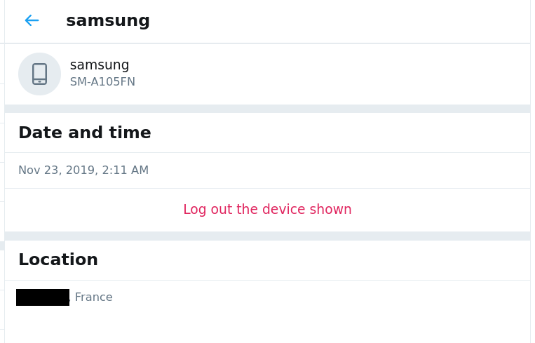

Check Active Sessions
Twitter provides an easy way to see active sessions to your account, wether they are sessions open in web browsers or in phone applications. Visit the page Settings and privacy > Account > Apps and sessions and check the list of sessions at the bottom of the page :
This page shows you first the session you are using to check this page (which you cannot log out from), and then the list of the other active sessions. For each session, you can see if it is on a phone or computer, what type of device and an approximate location (the location can be wrong, especially if you are regularly using Tor or VPNs). By clicking on a session, you can see the time of the beginning of the session and log out of from this device.

You should log out from all the sessions you do not know or use.